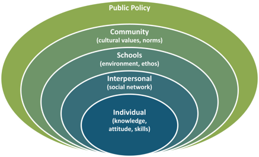

Prevention
Prevention is ensuring that we change the conditions and norms that allow violence to occur in the first place. VAV believes that primary prevention means to cultivate a campus culture that values respect, healthy boundaries and the worth of all people, where individuals feel safe to be themselves.
Some people refer to this as the "up-stream" method. This means that instead of focusing on the problem and "rescuing" those who have experienced a form of interpersonal violence, or who are "in the river" - we head 'up the riverbank' to find out why people are falling in the river in the first place to find the root causes of violence. Check out this video created by the Washington Coalition of Sexual Assault Programs that explains what we mean:
Consent to Sexual Activity is:
A healthy relationship is one in which all partners feel safe to be themselves.
As a young adult and student at The University of Texas at Austin, you have choices about how you do or do not pursue dating, romantic relationships and sexual experiences. How you make these choices, and how you treat peers, friends and dating partners while on campus not only impacts those individuals but has a ripple effect across the different layers of the socio-ecological model.

From the Texas Association Against Sexual Assault (TAASA) Toolkit, "Risk Factors for the Perpetuation of Sexual Violence" (Krug, Dahlberg, Mercy, Zwi and Lozano, 2002 and CDC 2004 Please see: http://www.taasa.org/prevention/pdfs/TAASA_ECGuidebook.pdf and http://www.cdc.gov/violenceprevention/sexualviolence/riskprotectivefactors.html
PreventConnect - A national online project dedicated to the primary prevention of sexual assault and domestic violence
Shifting the Paradigm: Primary Prevention of Sexual Violence - American College Health Association
Guidelines: Position Statement on Preventing Sexual Violence on College and University Campuses - American College Health Association
Tools for Change: An Introduction of the Primary Prevention of Sexual Assault by the Texas Association Against Sexual Assault (TAASA)
Preventing Sexual Violence - Washington Coalition of Sexual Assault Programs
Guidelines for the Primary Prevention of Sexual Violence and Intimate Partner Violence - Virginia Sexual and Domestic Violence Action Alliance
Together we can build a safer campus
What does this mean in my life?
VAV views prevention not as abstract theory but as how we treat the people in our lives on a daily basis. If everyone practiced consent and ensured that they were treating their friends, dates, partners and other people with respect and integrity - VAV wouldn't need to exist. Violence prevention doesn't have to be complicated, but it does require that we are willing to learn and are willing to hold ourselves and our friends accountable.
Who is perpetuating violence?
Many studies have been done to examine what the prevalence of interpersonal violence and the impact of violence on survivors. A growing aspect of the field is looking at what factors that led to the perpetuation of interpersonal violence and who is committing violence in our communities. It has been clearly established that the vast majority of interpersonal violence is committed by men. 98% of female and 93% of male rape survivors report that their assailants were male. (2010 NISVS) Although we know that women and gender non-conforming individuals are capable of and also perpetuate violence, there is a growing consensus in the field is that the root of much interpersonal violence is hegemonic masculinity. VAV and other partners in the field address this by emphasizing and promoting a model of healthy masculinities. Please read more about VAV's approach to healthy masculinities here.
You are embedded in a context.
When VAV talks about prevention of violence, we look at not only individual behavior but what has influenced that person and the impact of that behavior. Individual choices are at the center of the prevention of violence, and they must be examined within the context of how we give and receive messages about interpersonal relationships in our lives. It is critical to look at what our family, friends and teachers/coaches/mentors have taught us about how to treat other people in our lives. What other people are do and say creates an environment in which certain some behaviors are encouraged and other behaviors are deemed unacceptable - i.e. norms. Some unacceptable behavior, such as the violation of someone else's consent, is enforced by federal, state and local law as well as UT Austin policy.
What are root causes of interpersonal violence?
Researchers and practitioners in public health have worked to identify the root causes of violence are in the United States. While this list may look simple at first glance,the path to uprooting and ending violence complex and exists across the socio-ecological model described above. Some root causes that have been identified include:
LEVEL
RISK FACTORS
Individual Level
These are personal factors or characteristics that are related to sexually violent behavior, including biological factors and personal history.
Drug/Alcohol Use
Hostility Toward Women
Acceptance of Sexual Violence
Relationship / Interpersonal Level
Individuals and their behaviors are influenced by their interactions with family, peers, and other important people in their lives.
Sexually Aggressive Peers
Physically Violent Family Life
Emotionally Unsupportive Family
Community Level
Community level factors also greatly influence a person's beliefs and behaviors and can set a standard for how people are supposed to behave. These influences include one's workplace, school, various government entities, and neighborhoods.
General Tolerance of Sexual Assault
Lack of Enforcement of Policies
Lack of Employment Opportunities
Societal Level
Societal, in this sense, refers to the broader workings of a culture, including norms about gender roles, religious beliefs, and the balance of power between certain groups.
Inequalities / Oppression
Norms about Masculinitiy and Violence
Norms about Entitlement to Sex
What are concrete ways we can address these root causes?
Additional Reading on Prevention